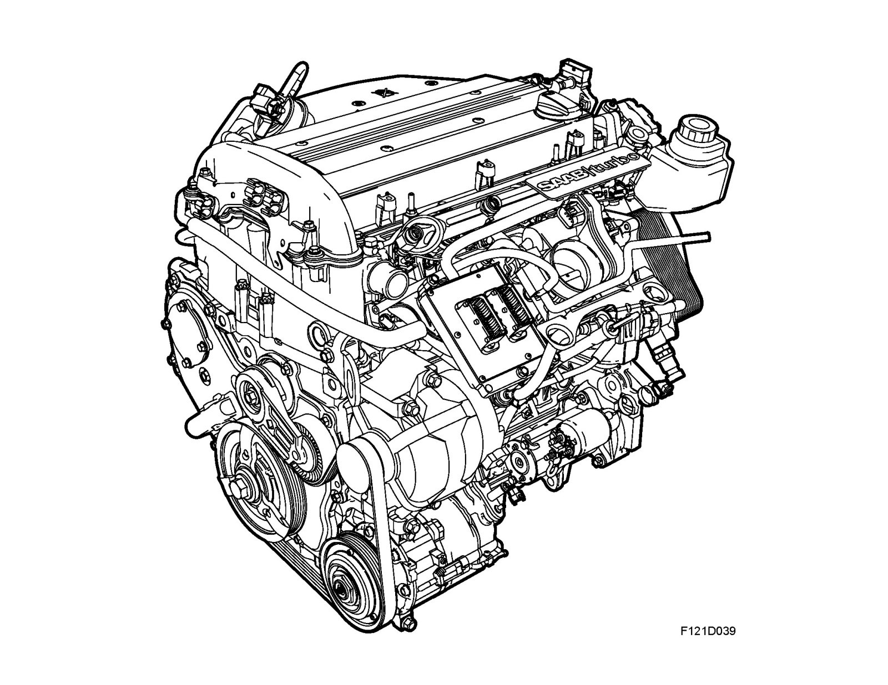

Brief Description B207L
Brief description B207L
Petrol engine
The engine is a fluid-cooled, 4-cylinder, 2.0 litre petrol in-line engine of aluminum with 4 valves per cylinder, 2 overhead camshafts and 2 balancer shafts integrated in the cylinder block.
The engine with gearbox is assembled as a unit and sits transverse in the engine bay. The engine is of the cross-flow type, i.e. with inlet ducts on one side and exhaust ducts on the other side of the combustion chamber. The cylinder liner is made of steel and is pressed into the engine block. The forged, induction-hardened crankshaft is mounted on five main bearings which are integrated into a common plate, known as the bed plate.
To get a low noise level and compact engine, the coolant pump drive is integrated into the balance shaft chain circuit. The power steering pump and vacuum pump for fuel pressure amplification are directly driven via the camshafts.